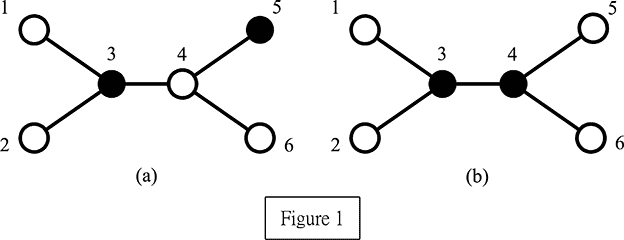

Home Page
F.A.Qs
Statistical Charts
Past Contests
Scheduled Contests
Award Contest
| Online Judge | Problem Set | Authors | Online Contests | User | ||||||
|---|---|---|---|---|---|---|---|---|---|---|
| Web Board Home Page F.A.Qs Statistical Charts | Current Contest Past Contests Scheduled Contests Award Contest | |||||||||
|
Language: Perfect Service
Description A network is composed of N computers connected by N − 1 communication links such that any two computers can be communicated via a unique route. Two computers are said to be adjacent if there is a communication link between them. The neighbors of a computer is the set of computers which are adjacent to it. In order to quickly access and retrieve large amounts of information, we need to select some computers acting as servers to provide resources to their neighbors. Note that a server can serve all its neighbors. A set of servers in the network forms a perfect service if every client (non-server) is served by exactly one server. The problem is to find a minimum number of servers which forms a perfect service, and we call this number perfect service number. We assume that N (≤ 10000) is a positive integer and these N computers are numbered from 1 to N. For example, Figure 1 illustrates a network comprised of six computers, where black nodes represent servers and white nodes represent clients. In Figure 1(a), servers 3 and 5 do not form a perfect service because client 4 is adjacent to both servers 3 and 5 and thus it is served by two servers which contradicts the assumption. Conversely, servers 3 and 4 form a perfect service as shown in Figure 1(b). This set also has the minimum cardinality. Therefore, the perfect service number of this example equals two.  Your task is to write a program to compute the perfect service number. Input The input consists of a number of test cases. The format of each test case is as follows: The first line contains one positive integer, N, which represents the number of computers in the network. The next N − 1 lines contain all of the communication links and one line for each link. Each line is represented by two positive integers separated by a single space. Finally, a 0 at the (N + 1)th line indicates the end of the first test case. The next test case starts after the previous ending symbol 0. A −1 indicates the end of the whole inputs. Output The output contains one line for each test case. Each line contains a positive integer, which is
Sample Input 6 1 3 2 3 3 4 4 5 4 6 0 2 1 2 -1 Sample Output 2 1 Source |
[Submit] [Go Back] [Status] [Discuss]
All Rights Reserved 2003-2013 Ying Fuchen,Xu Pengcheng,Xie Di
Any problem, Please Contact Administrator